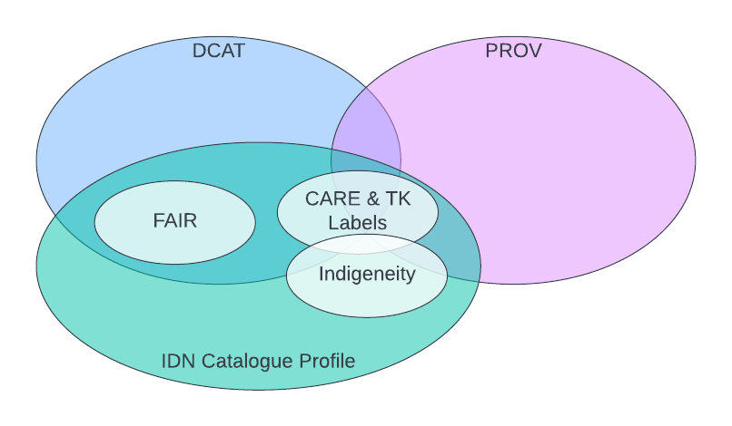
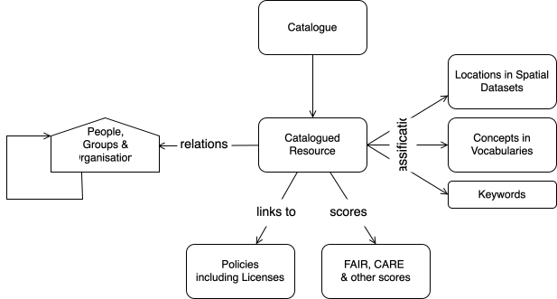
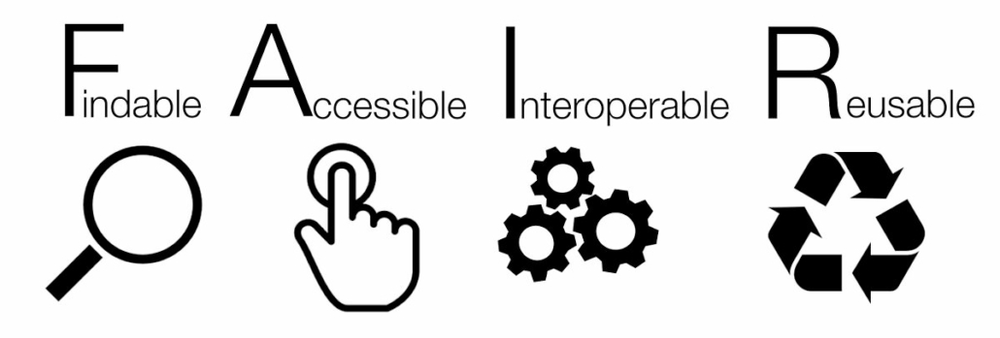
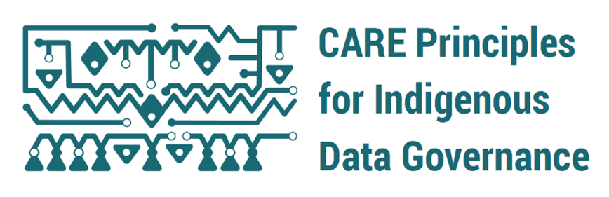
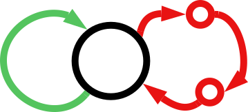
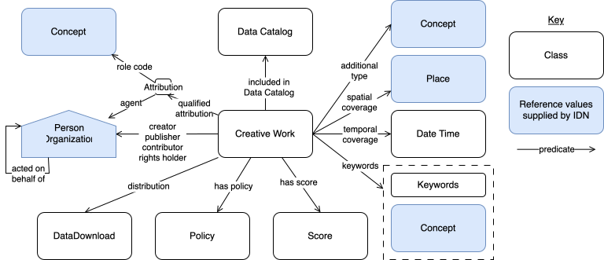
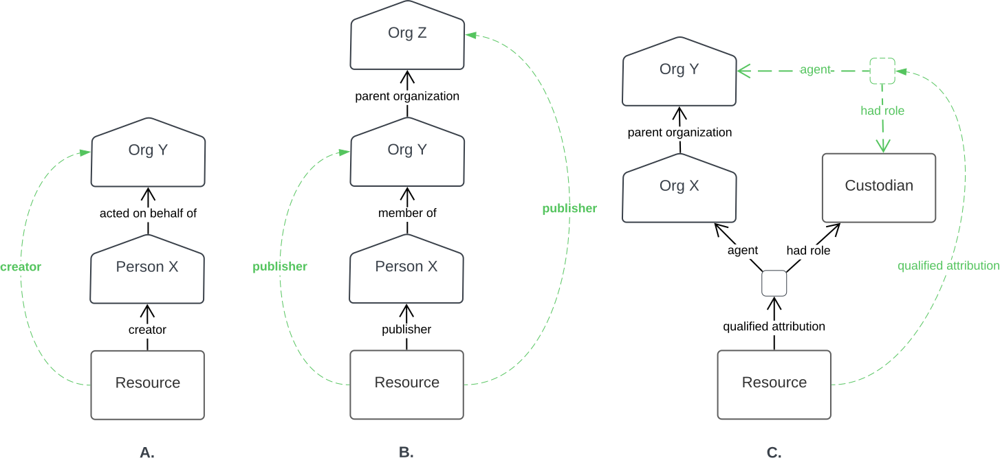
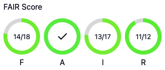
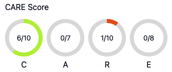
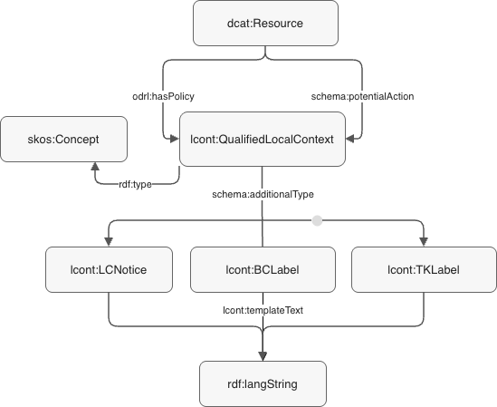

-
Starting Point
- See the Guidance Document
-
All Profile Resources
- See the Profile Resources
IDN Catalogue Profile - Specification
This is the IDN Catalogue Profile's specification, the formal documentation of the IDN CP's data model and requirements.
For other IDN CP resource, including introductory documents, see the links to the right.
{kind=link}

Figure 1: This profile overlaps concerns with the DCAT and PROV models and provides for the description of data according to several other assessment models, such as FAIR, CARE etc. The overlaps do indicate which models are needed to cover requirements of the assessment models.
Metadata
- URI
https://data.idnau.org/pid/cp/spec↗- Is Part Of
- IDN Catalogue Profile
- Publisher(s)
- Indigenous Data Network
- Creator(s)
- Nicholas J. Car
- Dates
-
Created 2022-03-18 Issued 2022-07-19 Modified 2026-02-26 - Version
- 1.2.0
- License
- Attribution 4.0 International (CC BY 4.0)
- Copyright
- Indigenous Data Network, 2022 - 2026
Preamble ↑
Abstract ↑
This is the formal data model specification of the IDN Catalogue Profile. It is a profile - a specification that constrains/extends other specifications - of several well-known models, particularly schema.org, but also PROV-O, the Provenance Ontology and several others.
Where schema.org is a general-purpose set of model elements for documenting Internet resources and PROV-O for representations of provenance in general, this profile aims to cater for the enhanced representation of catalogued Indigenous data and specialised provenance for Indigenous data governance calculations.
This profile has mappings to several well-known catalogue models, particularly DCAT, the Data Catalog Vocabulary and RO Crates and a description of how to use it with Local Context labels.
A 'Scores' model and algorithms for the calculation of catalogue metrics based on the FAIR and CARE principles as well as a developed-here Data Governance Distance score are also provided.
Finally, introduction to fundamental principles, descriptions and examples of the modelling patterns used, the model definition in human- and machine-readable forms, a catalogue of reference data objects and a data validator are also described and made available.
Parts
You are now reading the Specification part of the IDN Catalogue Profile which defines the metadata model, but there are other parts too, that provide model mappings, further examples, machine-readable forms of the model and so on.
See the IDN Catalogue Profile Definition for a listing of all the parts.
Namespaces ↑
This document refers to elements of various ontologies by short codes using namespace prefixes. The prefixes and their corresponding namespaces' URIs are:
| aarr | https://data.idnau.org/pid/vocab/aarr/ |
|---|---|
| bc | https://data.idnau.org/pid/vocab/bc-labels/ |
| cp | https://data.idnau.org/pid/cp |
| dcat | http://www.w3.org/ns/dcat# |
| droles | https://linked.data.gov.au/def/data-roles/ |
| dcterms | http://purl.org/dc/terms/ |
| ids | http://id.loc.gov/vocabulary/identifiers/ |
| lcn | https://data.idnau.org/pid/vocab/lc-notices/ |
| lcont | https://data.idnau.org/pid/lc-ont# |
| odrl | http://www.w3.org/ns/odrl/2/ |
| owl | http://www.w3.org/2002/07/owl# |
| prof | http://www.w3.org/ns/dx/prof/ |
| rdf | http://www.w3.org/1999/02/22-rdf-syntax-ns# |
| rdfs | http://www.w3.org/2000/01/rdf-schema# |
| rico | https://www.ica.org/standards/RiC/ontology# |
| role | http://www.w3.org/ns/dx/prof/role/ |
| schema | https://schema.org/ |
| scores | https://linked.data.gov.au/def/scores/ |
| skos | http://www.w3.org/2004/02/skos/core# |
| tk | https://data.idnau.org/pid/vocab/tk-labels/ |
| xsd | http://www.w3.org/2001/XMLSchema# |
Conformance ↑
The key words MAY, MUST, MUST NOT, and SHOULD are to be interpreted as described in RFC2119.
The Examples in this document are snippets of RDF data formulated according to the Turtle syntax.
1. Introduction ↑
This section provides direct answers to likely early questions about this profile, specifically:
- What is the purpose of this Profile? See Purpose
- What does basic use of this profile look like? See Basic Use
- What minimum elements are required? See Minimum Metadata
- What are all the recommended elements? See All Elements
- How do I get (good) FAIR, CARE and DGD scores? See Scoring
- Where do I get specific values for some properties from? See Vocab Values
- What support tooling is available? See Tools
- What data formats can I use for this metadata? See Formats
- How does the metadata model relate to others like RO Crates & Local Context Labels? Mappings
1.1 Purpose ↑
What is the purpose of this Profile?
To improve the representation of Indigenous data's metadata and governance information.
Common catalogue models provide lots of possible metadata elements which can be used to describe catalogued items, to categorise them, indicate how they are managed and so on but don't specifically handle Indigenous concerns.
This profile's ultimate aim is to improve Indigenous person's agency in relation to data by or about them and Indigenous things by:
- improving the identification of data as being about Indigenous people and/or things
- explicitly linking Indigenous data to all the persons and organisations related to it
- explicitly linking Indigenous data to all the policies that affect it
This Profile recommends ways to use a general-purpose web object description model - schema.org - in particular ways which are called patterns - see the Patterns Section below.
1.2 Basic Use ↑
What does basic use of this profile look like?
{kind=link}

Figure 2: This profile requires basic use of the DCAT model's elements for cataloguing with model elements from several other models for classification and relating catalogued resources to people and organisations. This is all common DCAT practice.
This IDN Catalogue Profile builds on the
schema.org, which requires DataCatalog
instances to contain CreativeWork instances, and some schema.org-recommended ways of expressing
relationships
from creative works to people & organisations - Agents. Creative works can be categorised using
defined terms in managed vocabularies and reference datasets and a few special relationships are recommended to
link resources to policies, such as data governance policies and licenses.
It is recommended that identifiers for Persons or Organisations linked to data be taken from the IDN's Agents Database and that categorisation controlled terms and named locations be taken from the IDN's Reference Data Catalogue.
The IDN's Agents Database stores additional Indigenous-relevant information about people and groups known to be involved with Indigenous data which means use of identifiers for Persons and Organisations drawn from there may provide a lot more extended information specific to Indigenous data governance concerns than ORCID - international researcher identifier - and similar identifiers often used for people in data cataloguing unknown to the database.
Also, when using schema.org, you might indicate the theme of data by classifying a CreativeWork
with
plain text keywords or perhaps indicate a Fields of Research
Code.
When using this profile we recommend you draw terms from the IDN
Themes vocabulary
which provides detailed Indigenous-specific terms and includes many common terms such as those FoR codes anyway,
crosslinked with multiple such common vocabularies.
In addition to requiring the use of certain common data cataloguing model patterns over others and recommended use of particular reference datasets, this profile also constrains the ways in which several schema.org properties should be used. All the constraints are valid schema.org use, just narrower than basic use.
UP TO HERE
1.3 Minimum Metadata ↑
What minimum elements are required?
For the cataloguing of resources according to this profile, we need at least the following information:
| Property | Notes |
|---|---|
| Identifier | Either you have one, or we can create one for you. See the Identifiers section below |
| Title | Just plain text |
| Description | A single sentence at least, up to multiple paragraphs. Just plain text though |
| Agents |
Persons Organisations associated with the resource and the roles they play.
|
| Created/Published |
The date/year etc. the data was created or published. This property is recommended but optional: If you really don't know this, leave it out. See the Dating section below. |
| Modified |
The date/year etc. the data was last modified/updated. This property is recommended but optional: If you really don't know this, leave it out. See the Dating section below. |
| Themes (keywords) |
Any number of preferably vocabulary concepts but also perhaps plain text themes/categories/keywords classifying the resource. This property is recommended but optional. See the Theming section below. |
| Policy details |
A reference (hyperlink/description) to any (Indigenous) data policy that pertains to this specific resource or the class of resource this is in. Includes access rights and licenses. This property is recommended for governance assessment. See the Policies section below. |
A catalogued resource with minimal metadata:
- Tjukinya
- original TROVE record at https://trove.nla.gov.au/work/10128420
For this resource we have only:
| Property | Notes |
|---|---|
| Identifier | https://trove.nla.gov.au/work/10128420 |
| Type |
http://purl.org/dc/dcmitype/PhysicalObject
|
| Title | Tjukinya |
| Description | Folktale: The little red hen retold in Pitjantjatjara |
| Agents |
|
| Published | 1980 |
| Themes (keywords) | Pitjantjatjara |
| Policy details |
|
It has a simple title, brief description and a few Agents (organisations & persons) associated with it. This item is easily understood to be Indigenous as it is themed with an indigenous language - Pitjantjatjara - and controlled access is indicated.
This item will gain some form of FAIR and CARE scores, but they could be improved: see the next section.
1.4 All Elements ↑
What are all the recommended elements?
In general, all the metadata elements that can be used in accordance with this profile are those of the DCAT specification. DCAT contains lots of attributes for lots of purposes, so most resources will not sensibly use all of them.
More specifically, there are other schemes, including profiles of DCAT, that recommend specific elements for use, beyond those listed in the previous section.
Here we make two specific recommendations for particular DCAT metadata elements:
- Australian government-aligned metadata
- Maximal Indigenous content representation
1.4.1 Australian government-aligned metadata
This recommendation is to use metadata elements aligned with the National Data Commissioner's Guide on Metadata Attributes.
In addition to the elements listed in the minimum metadata section above:
| Property | Notes |
|---|---|
| Distribution information |
How to technically access this resource, for example:
See the Distribution Class details in the Model Section. |
| Temporal coverage |
The time period covered by the data. can eb indicates as a date, date range, year range or named time period. See the Temporality pattern section. |
| Spatial coverage |
The spatial area covered by the data Note this might be given as a geometry - point or polygon - but may best be given as a link to an online spatial object, e.g. administrative areas within the ASGS online. See the Spatiality pattern section. |
| Resource language |
The language of the resource content Note this might the language of text, or as spoken in a video or audio resource. |
1.4.2 Maximal Indigenous content representation
This recommendation is to use the same metadata elements as listed above for minimal metadata and the National Data Commissioner's Guide on Metadata Attributes but with specific sources for particular values.
In addition to the elements listed in the minimum metadata section above:
| Property | Notes |
|---|---|
| Agents | Use identifiers for Agents registered within the IDN's Agents DB. This ensures that the Indigenous relations of the Agent, if any, are known and can be used to assess whether they are a representative of the targets of the resource information, for governance purposes. |
| Themes |
Use vocabularies specifically created to indicate Indigenous aspects of data, for example: These vocabularies build on widely used general-purpose vocabularies, such as the ARDC's Fields of Research codes but contain detailed Indigenous modelling. |
| Policy details |
The particular policies that are sought are:
Best representation in metadata would be to link to online copies of the policies and to indicate their type from the IDN's Policy Types vocabulary |
| Spatial coverage |
Indicating the spatial coverage of the resource, or its place of origin, with reference to a names spatial feature, in particular Indigenous spatial features, such as those provided by the Indigenous Data Network's reference Spatial Data Catalog. |
| Resource language |
Indicating an Indigenous language of the resource, as read in a text or heard in video or audio media, using the AustLang vocabulary. |
1.5 Scoring



In addition to the metadata model constraints placed on generic data catalogue models to improve Indigenous data representation, this profile also indicates how to calculate several "scores" - metrics - for aspects of catalogued resource.
The most well-known of these is scores is the FAIR score, based on the FAIR Principles which indicate the findability, accessibility, interoperability and reusability of data. The CARE score is facilitated is the first known metric-ification of the CARE Principles for Indigenous Data Governance.
This profile also specifies a Data Governance Distance score, see the B.3. Data Governance Distance annex. for details
The purpose of including these scores in this profile is to allow profile users to calculate, or have calculated for them, metrics which can be used to measure resource Indigenous data governance improvement. For example, a catalogue of many resources might initially have an average CARE score of X and wish to improve that to Y. By reviewing how the scores are calculated, the catalogue manager might be able to implement this change.
Annex B details how scores work in general, how they are calculated from this profile's metadata, and how to record score results alongside other resource metadata.
1.6 Vocab Values
For catalogued objects, it is important to use well-defined and preferably common reference values for categorisation in metadata for maximal understanding. For example, if you are trying to ensure as many people as possible understand that a catalogued information object is about Indigenous people, you could categorise it with the concept About Indigenous People.
That concept is explicitly defined to indicate that something it is assigned to is "about Indigenous people" making understanding easy, as opposed to something related that may be ambiguous. For example, if the categorisation "Indigenous" was used for an object, it may be about Indigenous people, or Indigenous things or native Australian plants etc.
Additionally, that concept is de-referencable - when clicked the link to it above resolves to more information - and published with a set of other vocabularies all about Indigenous Australian concerns.
The Indigenous Data Network published a reference catalogue of vocabularies for metadata use:
some particular vocabularies of interest there are:
- Data Indigeneity - The ways in which data may have a connection to Indigenous people
- IDN Themes - The Indigenous Data Network's general-purpose vocabulary of thematic terms for indigenous data
- IDN Role Codes - The roles that Agents - People and Organisations - play in relation to data
We recommend that IDN vocab terms be used as much as possible for metadata according to this profile. If a term you expect and need is missing from an IDN vocabulary, please contact the IDT to have it added.
1.7 Tools
There are a number of tools provided to help people use this metadata profile. In particular:
- Metadata Entry Tool - online form that can create IDN CP metadata and calculate scores
- IDN CP Validator - a SHACL RDF data validation file that can be used to check conformance of metadata to this profile
Additional tools are the IDN's demonstration, vocabularies and spatial reference data catalogues that provide examples and reference data elements that can be used in the creation of new records.
See the IDN's catalogue of catalogues to see all the catalogues that may be of help.
1.8 Format ↑
What data formats can I use for this metadata?
This uses the same machine-readable data structure used by DCAT and schema.org: Resource Description Framework (RDF).
RDF is widely supported by tools and available in multiple formats, in particular:
- Turtle - the native RDF syntax
- JSON and JSON-LD - a JSON syntax some developers prefer
- JSON and RDF/XML - an XML syntax
It's critical that metadata is supplied in one of the RDF syntaxes, or able to be converted to it, so that it can be validated with this profile's supplied validators - see the Validation Section.
Here are the contents of the Tjukinya resource shown in the Minimum Metadata section above expressed in Turtle, JSON-LD & RDF/XML.
Turtle is a text-based, reasonably human-readable syntax for RDF.
PREFIX prov: <http://www.w3.org/ns/prov#> PREFIX schema: <https://schema.org/> PREFIX xsd: <http://www.w3.org/2001/XMLSchema#> <https://trove.nla.gov.au/work/10128420> a schema:CreativeWork ; schema:additionalType <http://purl.org/dc/dcmitype/PhysicalObject> ; schema:name "Tjukinya" ; schema:description "Folktale: The little red hen retold in Pitjantjatjara" ; schema:creator <https://data.idnau.org/pid/person/2ac04c2b-7d85-4376-b4a3-8fd5b92c3117> ; schema:publisher <https://example.com/agent/123456> ; schema:keywords <https://data.idnau.org/pid/austlang/C6> ; prov:qualifiedAttribution [ a prov:Attribution; schema:roleCode <https://linked.data.gov.au/def/data-roles/custodian> ; prov:agent <https://linked.data.gov.au/org/nla> ] ; schema:dateIssued "1980"^^xsd:gYear ; schema:keywords <https://data.idnau.org/pid/austlang/C6> ; schema:usageInfo "Not for Inter-Library Loan" ; schema:inLanguage <https://data.idnau.org/pid/austlang/C6> ; .
Note that the reference to the publisher, the Summer Institute of Linguistics, is by persistent
identifier web address, https://example.com/agent/456, that resolves to more information
about
the Institute. This particular identifier is from the IDN Agents
Database, so the IDN potentially knows more information about the Institute than just basic facts such
as its name, for example whether it is an Indigenous-led organisation.
JSON-LD is a convention for the use of JSON data that can represent RDF data. It is a modern syntax used by modern Web systems for data transfer.
This example JSON-LD has been auto-converted from the Turtle-formatted data and can be back-converted perfectly.
{ "@context": { "@vocab": "http://purl.org/dc/terms/", "accessRights": "http://www.w3.org/ns/dcat#accessRights", "theme": "http://www.w3.org/ns/dcat#theme", "Resource": "http://www.w3.org/ns/dcat#Resource", "year": "http://www.w3.org/2001/XMLSchema#gYear", "PhysicalObject": "http://purl.org/dc/dcmitype/PhysicalObject", "agent": "http://www.w3.org/ns/prov#agent", "hadRole": "http://www.w3.org/ns/prov#hadRole", "attribution": "http://www.w3.org/ns/prov#qualifiedAttribution", "austlang": "https://data.idnau.org/pid/austlang/C6", "droles": "https://linked.data.gov.au/def/data-roles/" }, "@graph": [ { "@id": "https://trove.nla.gov.au/work/10128420", "@type": "Resource", "type": { "@id": "http://purl.org/dc/dcmitype/PhysicalObject" }, "title": "Tjukinya", "description": "Folktale: The little red hen retold in Pitjantjatjara", "creator": { "@id": "https://data.idnau.org/pid/person/2ac04c2b-7d85-4376-b4a3-8fd5b92c3117" }, "publisher": { "@id": "https://example.com/agent/123456" }, "attribution": { "@id": "_:nb0e54b223f37485b8555e8d45b468bf9b1" }, "issued": { "@type": "year", "@value": "1980" }, "theme": { "@id": "https://data.idnau.org/pid/austlang/C6" }, "accessRights": "Not for Inter-Library Loan" }, { "@id": "_:nb0e54b223f37485b8555e8d45b468bf9b1", "@type": [ "http://www.w3.org/ns/prov#Attribution" ], "agent": { "@id": "https://linked.data.gov.au/org/nla" }, "language": { "@id": "https://data.idnau.org/pid/austlang/C6" }, "hadRole": { "@id": "droles:custodian" } } ] }
XML is still commonly used as a format for metadata but care must be taken here: RDF/XML, a specific formulation of XML, must be used for XML data, not general-purpose XML.
The following RDF/XML has been auto-converted from the Turtle-formatted data.
<?xml version="1.0" encoding="utf-8"?> <rdf:RDF xmlns:dcat="http://www.w3.org/ns/dcat#" xmlns:dcterms="http://purl.org/dc/terms/" xmlns:prov="http://www.w3.org/ns/prov#" xmlns:rdf="http://www.w3.org/1999/02/22-rdf-syntax-ns#" > <rdf:Description rdf:about="https://trove.nla.gov.au/work/10128420"> <rdf:type rdf:resource="http://www.w3.org/ns/dcat#Resource"/> <schema:additionalType rdf:resource="http://purl.org/dc/dcmitype/PhysicalObject"/> <schema:name>Tjukinya</schema:name> <schema:description>Folktale: The little red hen retold in Pitjantjatjara</schema:description> <schema:creator rdf:resource="https://data.idnau.org/pid/person/2ac04c2b-7d85-4376-b4a3-8fd5b92c3117"/> <schema:inLanguage rdf:resource="https://data.idnau.org/pid/austlang/C6"/"/> <schema:publisher rdf:resource="https://example.com/agent/123456"/> <prov:qualifiedAttribution rdf:nodeID="n09d0151a1e6140cfb188576200eb9d69b1"/> <schema:dateIssued rdf:datatype="http://www.w3.org/2001/XMLSchema#gYear">1980</schema:dateIssued> <schema:keywords rdf:resource="https://data.idnau.org/pid/austlang/C6"/> <schema:usageInfo>Not for Inter-Library Loan</schema:usageInfo> </rdf:Description> <rdf:Description rdf:nodeID="n09d0151a1e6140cfb188576200eb9d69b1"> <rdf:type rdf:resource="http://www.w3.org/ns/prov#Attribution"/> <schema:roleCode rdf:resource="https://linked.data.gov.au/def/data-roles/custodian"/> <prov:agent rdf:resource="https://linked.data.gov.au/org/nla"/> </rdf:Description> </rdf:RDF>
Other formats
All standard RDF formats may be used. As a guide, those able to be handled by the RDFLib code library are fine.
If you need to create RDF data for the first time, you can use the:
2. Patterns ↑
This section describes patterns which are small scenario models within the overall Catalogue Profile model.
Some of these patterns are well-used in the data cataloguing domain. Some are Indigenous-specific.
2.1 Identifiers ↑
This Profile relies on web address-style identifiers for things, so you will need to provide, or ask us to create, something like this:
That is the identifier for the Welcome to Country: A travel guide to Indigenous Australia dataset which, when clicked, will redirect to the catalogue entry for it on one of the Indigenous Data Network's systems.
2.1.1 Existing Identifiers
If you already have a web address identifier for your data, use that. For example, "Australian First
Nations response to the pandemic: A dramatic reversal of the 'gap'" (2021) already has Digital Object
Identifier https://doi.org/10.1111/jpc.15701, so we continue to use that identifier. Just note that
in cases like this, the identifier will redirect somewhere else.
If you have a non web address identifier, try and use it to create a web identifier. For example, if your
organisation IDs a dataset as
ABC123, then you could create the IDN identifier of https://data.idnau.org/pid/ABC123
whcih preserved the original ID part but would redirect to an online catalogue entry.
It is also possible to use existing web addresses as identifiers for Organisations and Persons. See the guide to Agent Patterns for examples that use addresses from the Research Organization Registry (ROR) and the Open Researcher and Contributor Identifier (ORCID) registry.
2.2 Indigeneity ↑
Indigeneity, or "Indigenous-ness", is important to the data and people and organisations related to the data. The IDN's reference Data Indigeneity vocabulary provides values that should be used to indicate the indigeneity of data whereas the Organisations Indigeneity vocabulary and the Indigenous Status of Persons vocabulary should be used for Organisations & Persons, respectively.
2.3 Roles ↑
All Agents, that is Organisations & People, associated with resources such as datasets in IDN metadata need to have their role defined.
The roles we start with are those defined in the well-known ISO's Role Codes vocabulary.
This vocabulary contains standard roles such as:
- author
- co author
- custodian
- point of contact
To this vocabulary, we have added:
- subject agent
- subject agent representative
Some of these roles are present in the Full Example below.
In the technical versions of the examples below, you will see how pairs of Roles and Agents are grouped together in metadata so multiple Agents and Roles may be described for a single resource.
2.4 Agents ↑
Agents are persons or organisations - things with agency that can have a role to play with respect to catalogued resources.
All Agents referred to in IDN metadata MUST be identified with a persistent identifier and SHOULD be registered within the IDN Data Agents DB.
So, instead of referring to a person like this:
<http://example.com/resource/x> a schema:CreativeWork ; schema:creator "John Smith" ; # a literal string used for their name .
you must refer to them like this:
<http://example.com/resource/x> a schema:CreativeWork ; schema:creator <http://example.com/person/john-smith> ; # an identifier .
When registered in the AgentsDB, Agents are given a persistent identifier web address. Such identifiers may have been created elsewhere, or may be assigned by the Data Agents DB.
For example, here is the persistent identifier for the University of Melbourne:
This identifier resolves - you can click on it and go to a web page - and it has been assigned by a party other than the IDN, in this case, the Australian Government Linked Data Working Group, which is a source for many organisational persistent identifiers.
This identifier is present in the Example Appendix below.
Here is an example of an identifier for an Organisation supplied by the IDN:
https://data.idnau.org/pid/org/agilwg- Australian Government Indigenous Locations Working Group
Note the use of the IDN's namespace, https://data.idnau.org/.
If you enter a new Organisation or Person into the Data Agents DB, you will automatically be assigned a new persistent identifier of this form unless you quote an existing one.
2.5 Dating ↑
For Created & Modified and all other dates, you are free to use any one of the following formats, but you do have to pick one and not make up your own format:
| Type | Format | Example |
|---|---|---|
| Date | yyyy-mm-dd |
2021-02-28 |
| Year | yyyy |
2021 |
| Year/Month | yyyy-mm |
2021-02 |
| Date/Time | yyyy-mm-ddTHH:MM:SS |
2021-02-28T14:02:23 |
Please do not use junk values like 00:00:00 for time when you don't know it, instead select a format that effectively conveys what you do know about the data.
2.6 Theming ↑
Theming is open-ended categorisation of a resource by linking it to concepts in categorisation vocabularies or
to text keywords.
When using the DCAT model, the predicate schema:keywords is used and should
indicate a controlled
term in a vocabulary. When using the schema.org model, the predicate schema:keywords
(note the 's') should be used and may indicate plain text as well as controlled terms.
While it may be tempting to just theme a resource with words such as "Aboriginal" or "Wiradjuri", and this is better than not doing so, better yet is to use terms from vocabularies, in particular the IDN's reference vocabularies, as these have definitions.
The IDN's main, general-purpose, categorisation vocabulary is the IDN Themes vocabulary. and this should be used as much as possible. Within that vocabulary are collections of concepts grouped based on sub-theme or term origin, so if you're used to, for example, APAIS terms, you can draw from that collection.
In addition to contemporary terms, this vocabulary has archaic ones no longer recommended for use, such as "Aborigine". This allows old metadata records to be understood.
Since there is hierarchy in the IDN Themes vocab, you should always categorise a resource with the most specialised term you can, knowing that the vocabulary will automatically categorise the resource with relevant more general terms.
For example, if you state that a resource is categorised as Cultural burn, it will be understood that the resource is generically also categorised as First Peoples land management.
These two terms come from different vocabularies but the IDN Themes vocabulary has placed them in relation to one another, allowing for this kind of reasoning.
Example: A fictional resource, themed with several vocabulary terms and textual keywords <http://example.com/resource/x> a schema:CreativeWork ; schema:name "Resource X" ; # ... schema:keywords # "Cultural burn" from the IDN Themes vocab <https://linked.data.gov.au/def/nrm/c9f1f747-3677-5e72-aac0-b49733ea4629> , # "First Peoples land management" (implied) <https://linked.data.gov.au/def/policy/5cc52a34-77c0-4589-91c6-7dabb6b65761> , # "Aboriginal history" <https://vocabularyserver.com/apais/xml.php?skosTema=13> ; # ... .
2.7 Policies ↑
The policies that affect data resources greatly impact the status of Indigenous data governance, therefore a link from a resource to each policy known to affect it should be stated explicitly when known.
For example, resources in the Indigenous Studies Unit's catalogue are known to be managed in accordance with the University of Melbourne's Collections Policy, so this is indicated for every resource in the catalogue like this:
Example: The ISU's Law: The Way of the Ancestors resource and a link to a policy <https://data.idnau.org/pid/762463a4-f8b1-4eec-a335-3689c8d86e9e> a schema:CreativeWork ; schema:name "Law: The Way of the Ancestors" ; # ... odrl:hasPolicy <https://data.idnau.org/pid/MPF1309> , # "Collections Policy", identified with its ISU catalogue ID # ... .
Some policies affecting ISU catalogued content are listed as resources in the ISU's catalogue too:
- Aboriginal and Torres Strait Islander Cultural Heritage Policy
- Collections Policy
- Human Remains and Burial Artefacts Policy
- Research Data Management Policy
Organisations should explicitly identify all policies affecting their data and catalogue them if not already done. They should then link their resources to them, as above.
NOTE: In the future, it is hoped that machine-readable versions of policies can be made available, so that the details of how policies affect Indigenous data resources can be automatically understood. While we are not there yet, identifying and linking resources to policies, as above, is the first major step to that future.
2.8 Language ↑
Where a Resource includes text or spoken Indigenous languages, the Resource metadata SHOULD indicate this with languages selected from the AustLang vocabulary
Example: A resource in an Indigenous language <https://www.youtube.com/watch?v=tEdweyPh-N8> a schema:CreativeWork ; schema:name "Mitch Tambo performs John Farnham's You're the Voice in Gamilaraay language" ; # ... schema:inLanguage <https://data.idnau.org/pid/austlang/D23> ; # AustLang's Gamilaraay / Gamilaroi / Kamilaroi # ... .
See patterns under 2.6 Theming where the Resource is about an Indigenous language. Note that a Resource may be both about Indigenous language and written / spoken in Indigenous languages.
2.9 Provenance ↑
The provenance of objects are facts about their origins. As used in this profile, provenance links resources to their sources - perhaps also catalogued resources - links resource to the agents who have roles to play with respect to them and activities, e.g. project, that created them.
Provenance information can be critical in describing the context of resource needed to understand them.
Direct metadata properties such as dcterm:creator are provenance properties, but they will not be
discussed further here as they are part of basic metadata - see Basic Use.
As per DCAT (and this example), this profile requires that provenance information be formulated according to the PROV-O: The PROV Ontology.
One frequent case for the use of provenance according to PROV-O is for qualified attribution where a
resource is associated with an Agent with a specified role. Some direct DCAT and schema.org catalogued resource
metadata properties include roles, such as schema:publisher which includes the role 'publisher'
but there are many possibly significant roles that do not have such properties.
See the Agents section for a listing of roles.
Here is an example of a resource's qualified attribution to Agents with role not expressible in direct DCAT / schema.org properties:
Example: Provenance of qualified attribution <https://data.idnau.org/pid/resource/debd1b90-aeb4-403e-82fc-7db7c474b2fd> a schema:CreativeWork ; schema:name "Yirrkala LPC Dataset" ; # ... prov:qualifiedAttribution [ prov:agent <https://linked.data.gov.au/org/uom> ; # University of Melbourne schema:roleCode <https://def.isotc211.org/common/RoleCode/custodian> ; # Custodian ] , [ prov:agent <https://orcid.org/0000-0002-1398-7524> ; # Kristen Smith schema:roleCode <https://def.isotc211.org/common/RoleCode/pointOfContact> , # Point of Contact <https://def.isotc211.org/common/RoleCode/principalInvestigator> ; # Principle Investigator ] ; # ... .
In the above example, the University of Melbourne has a role - custodian - for which there is no direct DCAT / schema.org property, so a PROV=O qualified attribution is used. Kristen Smith has two roles: Point of Contact and Principal Investigator.
Projects
Provenance can be used to indicate projects or other activities that generated resource. This would take the
form
of PROV-O's prov:wasGeneratedBy from the resource indicating a project. For this you would need a
persistent identifier for the project.
3. Model ↑
This section defines the model of this catalogue profile: the classes and predicates used to form metadata.
Most od the metadata elements - classes and predicates - used in this profile exist in standard cataloging model.
They are reused here as originally intended but with conventions that optimise the use for the representation
of Indigenous data characterisation. For example, using schema:keywords for a schema:CreativeWork
to indicate a theme taken from the IDN Themes vocabulary.
The less common metadata elements here are those relating to scores - see the Scoring Section above. These elements come from the Scores Model described in Annex B.
{kind=link}

Figure 3: Overview of elements of this Profile's schema.org-based data model
3.1 Classes ↑
Class Index
3.1.1 Creative Work
| IRI | schema:CreativeWork |
|---|---|
| Name | Creative Work |
| Description | The most generic kind of creative work, including books, movies, photographs, software programs, etc. |
| Scope Note | This is the generic class for things catalogued. You MAY use it without qualification but you SHOULD
indicate a specialised class of object catalogues with the schema:additionalType predicate. |
| Equivalent Classes | dcat:Resource |
| Expected Properties |
basic metadata:
links to agents:
data access:
classification:
|
| Example |
|
3.1.2 Place
| IRI | schema:Place |
|---|---|
| Name | Place |
| Description | Entities that have a somewhat fixed, physical extension. |
| Scope Note | Use this class to represent areas of country, cities, named regions, points etc. Preferentially select the Place from IDN reference datasets. |
| Subclass Of | GeoSPARQL's Feature |
| Expected Properties | schema:geo (for coordinates), name |
| Example |
|
3.1.3 Date Time
| IRI | schema:DateTime |
|---|---|
| Name | Date Time |
| Description | A combination of date and time of day in the form [-]CCYY-MM-DDThh:mm:ss[Z|(+|-)hh:mm] |
| Scope Note | Use this object with a schema:startTime &/or schema:endTime to represent a period of time. |
| Subclass of | Time Ontology in OWL's Interval |
| Expected Properties | schema:startTime & schema:endTime (for timespans), name (for named time periods) |
| Example |
|
3.1.4 Attribution
| IRI | |
|---|---|
| Name | |
| Description | |
| Scope Note | |
| Equivalent Classes | |
| Expected Properties | |
| Example |
3.1.5 Person
| IRI | schema:Person |
|---|---|
| Name | Distribution |
| Description | |
| Scope Note | |
| Equivalent Classes | |
| Expected Properties | |
| Example | See the example for schema:CreativeWork |
3.1.6 Organization
| IRI | schema:Organization |
|---|---|
| Name | Distribution |
| Description | |
| Scope Note | |
| Equivalent Classes | |
| Expected Properties | |
| Example | See the example for schema:CreativeWork |
3.1.7 Score
| IRI | scores:Score |
|---|---|
| Name | Score |
| Description | A Score is a value, or set of values, for a catalogues resource that has been calculated from metadata or data elements known for the resource in accordance with a scoring principles or metric system, such as the FAIR principles |
| Scope Note | |
| Equivalent Classes | |
| Expected Properties | |
| Example |
3.1.8 DataDownload
| IRI | schema:DataDownload |
|---|---|
| Name | Distribution |
| Description | |
| Scope Note | |
| Equivalent Classes | |
| Expected Properties | |
| Example | See the example for schema:CreativeWork |
3.2 Predicates ↑
- name
- description
- links to agents:
- dates:
- keywords
- spatial coverage
- temporal coverage
- in language
- has policy
- license
- has score
- distribution
3.2.1 name
| IRI | |
|---|---|
| Name | |
| Description | |
| Scope Note | |
| Expected to be used on | |
| Example |
3.2.2 description
| IRI | |
|---|---|
| Name | |
| Description | |
| Scope Note | |
| Expected to be used on | |
| Example |
3.2.6 contributor
| IRI | |
|---|---|
| Name | |
| Description | |
| Scope Note | |
| Expected to be used on | |
| Example |
3.2.7 creator
| IRI | |
|---|---|
| Name | |
| Description | |
| Scope Note | |
| Expected to be used on | |
| Example |
3.2.8 publisher
| IRI | |
|---|---|
| Name | |
| Description | |
| Scope Note | |
| Expected to be used on | |
| Example |
3.2.9 rights holder
| IRI | |
|---|---|
| Name | |
| Description | |
| Scope Note | |
| Expected to be used on | |
| Example |
3.2.10 qualified attribution
| IRI | |
|---|---|
| Name | |
| Description | |
| Scope Note | |
| Expected to be used on | |
| Example |
3.2.11 date created
| IRI | schema:dateCreated |
|---|---|
| Name | |
| Description | |
| Scope Note | |
| Expected to be used on | |
| Example |
3.2.11 date modified
| IRI | schema:dateModified |
|---|---|
| Name | |
| Description | |
| Scope Note | |
| Expected to be used on | |
| Example |
3.2.11 date published
| IRI | schema:datePublished |
|---|---|
| Name | |
| Description | |
| Scope Note | |
| Expected to be used on | |
| Example |
3.2.11 date issued
| IRI | schema:dateIssued |
|---|---|
| Name | |
| Description | |
| Scope Note | |
| Expected to be used on | |
| Example |
3.2.11 keywords
| IRI | schema:keywords |
|---|---|
| Name | |
| Description | |
| Scope Note | |
| Expected to be used on | |
| Example |
3.2.3 spatial coverage
| IRI | schema:spatialCoverage |
|---|---|
| Name | |
| Description | |
| Scope Note | |
| Expected to be used on | |
| Example |
3.2.4 temporal coverage
| IRI | schema:temporalCoverage |
|---|---|
| Name | |
| Description | |
| Scope Note | |
| Expected to be used on | |
| Example |
3.2.5 in language
| IRI | schema:inLanguage |
|---|---|
| Name | |
| Description | |
| Scope Note | |
| Expected to be used on | |
| Example |
3.2.12 has policy
| IRI | odrl:hasPolicy |
|---|---|
| Name | |
| Description | |
| Scope Note | |
| Expected to be used on | |
| Example |
3.2.13 license
| IRI | schema:license |
|---|---|
| Name | |
| Description | |
| Scope Note | |
| Expected to be used on | |
| Example |
3.2.14 hasScore
| IRI | scores:hasScore |
|---|---|
| Name | |
| Description | |
| Scope Note | |
| Expected to be used on | |
| Example |
3.2.15 distribution
| IRI | schema:distribution |
|---|---|
| Name | |
| Description | |
| Scope Note | |
| Expected to be used on | |
| Example |
3.3 Reasoning Rules ↑
In addition to the Classes and Predicates declared in this model, as above, we also define some reasoning rules that enable data equivalencies to be calculated.
Reasoning Rules list
3.3.1 Qualified attribution equivalents
The predicates above that indicate a relationship between a Resource and an Agent have equivalents in the qualified attribution pattern where particular roles are taken from the IDN Role Codes vocabulary or other similar, vocabularies.
For example, the equivalent to associating a resource <X> to an agent <Y> with
the predicate
schema:publisher is:
<X> prov:qualifiedAttribution [ prov:agent <Y> ; schema:roleCode <https://linked.data.gov.au/def/data-roles/publisher> ] .
Not all direct predicates match role code concepts exactly so here is a pairing of equivalents for the direct agent associating predicated listed above:
| direct predicate | role code |
|---|---|
| contributor | contributor |
| creator | author |
| publisher | publisher |
| rights holder | rights holder |
Other direct Resource → Agent predicates exist in models such as schema.org,
for example accountable person but these should not be
used,
instead the qualified attribution pattern with IDN Role Code roles should be.
If roles for Agents already specified according to another model are to be converted to IDN CP equivalents, a judgement about direct predicate / role will have to be made.
A SPARQL query that can convert the direct predicate of creator to its qualified attribution equivalent is:
PREFIX rc: <https://linked.data.gov.au/def/data-roles/>
CONSTRUCT {
<X> prov:qualifiedAttribution [
prov:agent <Y> ;
schema:roleCode rc:author ;
] .
}
WHERE {
<X> prov:qualifiedAttribution <Y>
}
3.3.2 Attribution transitivity
{kind=link}

Figure 4: Several attributional transitivity reasoning scenarios. Reasoned relationships are shown in dashed green
When a Resource is attributed to an Agent and that agent has relationships to other agents - perhaps the first is a person who is a member of a community - then we can reason direct relationships between the resource and those other agents.
Figure 4 above shows several scenarios in which agent relations - people and organisations to other people and organisations - and attribution of a resource to an agent have led to further attributions being applied to the resource.
The total set of rules used to reason new attributional relationships, some of which are used in Figure 4, are:
| Logic | Rule Implementation | Substitutions |
|---|---|---|
| If a Resource relates to an Agent with a direct attribution predicate and that Agent is a delegate of another Agent, then the Resource relates to the other Agent in the same way. |
DIRECT_ATTRIBUTION owl:propertyChainAxiom (
DIRECT_ATTRIBUTION
DELEGATE_OF
)
|
Where DIRECT_ATTRIBUTION is one of:
DELEGATE_OF is one of:
|
| If a Resource relates to an Agents via qualified attribution and that Agent is a delegate of another Agent, then the Resource relates to the other Agent in the same way. |
CONSTRUCT {
?r prov:qualifiedAttribution [
prov:agent ?a2 ;
schema:roleCode ?r ;
.
}
WHERE {
?r prov:qualifiedAttribution [
prov:agent ?a ;
schema:roleCode ?r ;
.
?a schema:parentOrganization|schema:memberOf|prov:actedOnBehalfOf ?a2 .
}
|
- |
3.3.3 Policy scope transitivity
Resources are indicated as being affected by a Policy with use of the
odrl:hasPolicy predicate. Additionally, Policies may be reasoned to affect a resource if the
rules in the Policy are assigned to Parties which are also Agents related to the Resource.
For example, an Indigenous data ResourceX may be indicated as being affected PolicyY:
<ResourceX> odrl:hasPolicy <PolicyY> .
but ResourceX may also be custodianed by UnitH within UniversityI and
that university may have implemented a university-wide
Indigenous Data Governance Policy which applied to all units, PolicyK, so we have:
<ResourceX>
prov:wasAttributedTo [
prov:agent <UnitH> ;
schema:roleCode rolecode:custodian ;
] ;
.
<UnitH> schema:parentOrganization <UniversityI> .
We can then reason:
<ResourceX> odrl:hasPolicy <PolicyK> .
4. Reference Data Values
This profile requires the use of controlled terms - concepts from classification vocabularies, identified people & organisations, locations and so on - in many "slots".
Some of these controlled terms can come from any controlled term source, for example, the schema:spatialCoverage
value of a catalogued resource may be an identifier for a spatial object from one of many datasets of Indigenous
locations,
international place name gazetteers such as GeoNames or similar.
Other controlled terms must be sourced from particular vocabularies, such as the values for schema:additionalType
which must come from the IDN Catalogued Resource
Types vocabulary.
The Indigenous Data Network supplied a series of reference data objects - vocabularies, spatial object datasets and more - that, in some cases must and in other cases may, be used to provide controlled terms.
The following table lists the predicates in the model whose range values are slots to be filled with controlled terms and indicates what term sources are allowed for use there and, if provided, links to the sources.
| Model Slot | Imperative | Term Source(s) |
|---|---|---|
schema:keywords |
SHOULD MAY SHOULD NOT |
National and State government functions, fields of research or similar vocabularies Free text |
schema:spatialCoverage |
SHOULD MAY |
Spatial datasets in the IDN Reference Data Catalogue |
schema:roleCode |
MUST | Data Roles vocabulary |
5. Validation ↑
The requirements for data to conform to this profile are listed here. They are organised into the following subsections:
- Structural Requirements - specifying data "shapes" which are the patterns of classes and properties needed
- Values Requirements - specifying particular property values, i.e. classification of Resources according to specific vocabularies
Where model objects are indicated in code and no namespace is indicated, presume the
dcat, prov or skos namespaces are used. There are no class/property
overlaps between those models, so there can be no confusion if the object is looked up in those standards.
5.1 Structural Requirements
The following sub-subsections are per object class, where 'class' is one of the classes in this profile's structural overview (see Figure 2 above).
The general idea is that objects of the various class types in the overview diagram are needed for IDN metadata
and this section describes their required properties and relations. For example, all Resource
instances must be related to at least one Catalog instance.
2.1.2 Catalogue
Req C1: Being a Resource, each Catalog instance MUST
also adhere to the Resource Requirements R1, R2, R3 & R4.
Req C2: Each Catalog instance MUST contain at least one Resource
indicated by the hasPart property.
Example: A Catalogue instance with minimum required metadata <https://doi.org/a-doi-for-the-catalogue> a schema:DataCatalog ; schema:name "Catalogue X" ; schema:description "An example catalogue"@en ; schema:dateCreated "2022-07-21"^^xsd:date ; schema:dateModified "2026-02-25T20:15:21"^^xsd:dateTime ; prov:qualifiedAttribution [ a prov:Attribution; schema:agent <https://linked.data.gov.au/org/idn> ; # Indigenous Data Network's PID schema:roleCode :custodian ; ] , [ a prov:Attribution; schema:agent <https://orcid.org/0000-0002-8742-7730> ; # Nicholas Car's IRI schema:roleCode :pointOfContact ; ] ; schema:hasPart ex:some-resource-y , ex:some-resource-z ; # ... .
2.1.3 dataset
Req R1: Each Resource instance SHOULD indicate a persistent
identifier to be used to gain access to its point-of-truth metadata. The PID SHOULD be used as the Dataset
instance's IRI, if it is an HTTP/HTTPS IRI, or else it SHOULD be quoted as a literal value, indicated with the
property schema:identifier of datatype xsd:token.
Req R2: Each Resource instance MUST provide basic
Resource metadata so that exactly one of each of the following properties is required with range
value as per Resource requirements: title, description,
created & modified.
Req R3: Allowed Semantic Web date/time properties for created &
modified properties are xsd:date, xsd:dateTime,
xsd:dateTimeStamp, time:Interval
Req R4: Each Resource instance MUST NOT indicate Agent
roles with direct DCAT properties (e.g. publisher) and MUST indicate them with the
DCAT-recommended PROV qualified attribution pattern with each prov:Attribution indicated
with the property prov:qualifiedAttribution.
Req R5: Each Resource instance, if it is not a Catalog
instance MUST and if it is a Catalog instance MAY indicate that it is within at least one Catalog
instance with an in-bound hasPart property from a Catalog instance.
Req R6: Each Resource instance MAY indicate that it is a specific
type of resource by use of the schema:additionalType property. Catalogued Dataset
instances
are equivalent to catalogued Resource instances of schema:additionalType Dataset.
Example: A Resource instance with minimum required metadata <http://example.com/resource/x> a schema:CreativeWork ; dcterm:identifier "CAT::2-3-4::X"^^xsd:token ; # Dummy catalogue number schema:name "Resource X" ; schema:description "An example Resource"@en ; schema:dateCreated "2022-07-21"^^xsd:date ; schema:dateModified "2022-07-25T20:15:21"^^xsd:dateTime ; prov:qualifiedAttribution [ a prov:Attribution; prov:agent <http://example.com/org/clc> ; # Example Indigenous org PID schema:roleCode :custodian ; ] , [ a prov:Attribution; prov:agent <http://example.com/academic/person-x> ; # An academic schema:roleCode :author ; ] , [ a prov:Attribution; schema:agent <http://example.com/org/xyz-people> ; # An Indigenous group schema:roleCode :subjectAgent ; ] ; schema:additionalType ex:map ; # An example specialised resource - a map - from some vocabularty of types schema:isPartOfCatalog <https://example.com/cat/catalogue-x> ; . # a catalogue indicating this Resource is a part of it <https://example.com/cat/catalogue-x> a schema:DataCatalog ; schema:dataset <http://example.com/resource/x> ; .
2.1.3 Dataset
There are no structural requirements specifically for Dataset instances: the requirements for
Resource also apply to Dataset.
Note that there are values requirements for Dataset instnaces, as per the next section.
2.1.1 Attribution
Req A1: Each Attribution instance MUST indicate an
Agent instance with the property schema:agent and a role for that Agent,
as a skos:Concept, in relation to the attributing entity, with the hadRole property.
Example: A Resource with a qualified Attribution <http://example.com/resource/x> a schema:CreativeWork ; ... prov:qualifiedAttribution [ a prov:Attribution; schema:agent <http://example.com/resource/central-lands-council> ; schema:roleCode droles:custodian ; ] ; ... .
2.1.5 Agent
Agents are the Organisations & People that have Roles in relation to Catalogues and Resources.
Req AG1: Each Agent instance MUST be either an schema:Organization
or a schema:Person instance.
Req AG2: Each Agent instance MUST be described with at least the
schema:name property and, if an schema:Organization, also an schema:url
property with a xsd:anyURI value or, if a schema:Person, an
schema:email property with a xsd:anyURI value.
Req AG3: Each Agent instance SHOULD be described with a schema:description
property and, if the Agent has them, identifiers for it should be indicated with schema:identifier
with either xsd:anyURI, xsd:token or a datatype from the Library of
Congress Standard Identifiers vocabulary.
Req AG4: Each Agent MAY relate other information using schema.org
properties, for example schema:alumniOf to link a schema:Person to an schema:Organization.
Req AG5: Any Agent MAY relate to another Agent using
dcat:qualifiedRelation
property with a schema:roleCode indicating a skos:Concept from the Agent to Agent Relationship Roles vocabulary.
Example: An Organization with an example Australian Business Number identifer and a Person affiliated with it <https://kurrawong.ai> a schema:Organization ; schema:identifier "31353542036"^^ids:ausbn ; schema:name "KurrawongAI" ; schema:description "KurrawongAI is a small, Artificial Intelligence, company in Australia specialising in Knowledge Graphs." ; schema:url "https://kurrawong.ai"^^xsd:anyURI ; . <https://linked.data.gov.au/org/uom> a schema:Organization ; schema:identifier "https://ror.org/01ej9dk98"^^ids:ror ; schema:name "University of Melbourne" ; schema:url "https://www.unimelb.edu.au"^^xsd:anyURI ; . <https://orcid.org/0000-0002-8742-7730> a schema:Person ; schema:name "Nicholas J. Car"@en ; schema:email "nick@kurrawong.ai"^^xsd:anyURI ; schema:affiliation <https://kurrawong.ai> ; schema:alumniOf <https://linked.data.gov.au/org/uom> ; dcat:qualifiedRelation [ a dcat:Relationship ; schema:roleCode aarr:affiliateOf ; schema:agent <https://kurrawong.ai> ] ; .
2.1.5 Concept
This profile is a profile of Vocabulary Publications Profile,
VocPub, among other specifications. VocPub sets requirements for Concept and ConceptScheme
instances.
See the VocPub Concept requirements listed in its Specification:
Example: A Concept with basic VocPub requirements met <http://example.com/concept/x> a skos:Concept ; rdfs:isDefinedBy <http://example.com/concept-scheme/y> ; # Indicating the vocabulary that defines this term skos:prefLabel "Concept X"@en ; # The Concepts preferred label skos:altLabel "Xxx"@en ; # A synonym/alias skos:definition "An example Concept"@en ; # The Concept's definition skos:narrower <http://example.com/concept/x.1> ; .
2.1.6 ConceptScheme
This profile is a profile of Vocabulary Publications Profile,
VocPub, among other specifications. VocPub sets requirements for Concept and ConceptScheme
instances.
See the VocPub ConceptScheme requirements listed in its Specification's Vocabulary
section:
5.2 Values Requirements
IDN metadata must be represented according to certain classes with certain properties, including relations between classes, as defined in the section above. This section defines the requirements for particular properties to indicate particular values. These values are mostly items in particular vocabularies and catalogues managed by the IDN itself and the result of these requirements is to ensure that IDN metadata is related to values understood by the IDN.
Req V1: Each Resource instance MUST be categorised with at least one
value from the IDN Data Themes vocabulary, indicated with a theme property.
Req V2: The roles of Agent instances with relation to a Resource
MUST be indicated with the hadRole property and selected from the IDN Role Codes Vocabulary.
Req V3: Each Agent instance referenced by an Attribution
instance, if the Agent is Indigenous SHOULD be registered within the IDN Agents Catalogue.
Example: A Resource with a qualified Attribution <http://example.com/resource/x> a schema:CreativeWork ; ... # Concept within the IDN Data Themes Vocabulary schema:keywords idth:indigenous-demographics ; ... prov:qualifiedAttribution [ a prov:Attribution; # Example Agent that could be registered in the IDN Agents Catalogue schema:agent <http://example.com/resource/central-lands-council> ; schema:roleCode droles:custodian ; # Role from the IDN Role Codes Vocabulary ] ; .
7. Examples ↑
Here is the source code for the metadata of the Yirrkala LPC Dataset, as stored within the IDN's Keeping Place catalogue at:
Example: Turtle formatted RDF metadata for the Yirrkala LPC Dataset PREFIX dataaccessrights: <https://linked.data.gov.au/def/data-access-rights/> PREFIX dataroles: <https://linked.data.gov.au/def/data-roles/> PREFIX indigeneity: <https://data.idnau.org/pid/vocab/indigeneity/> PREFIX orcidorg: <https://orcid.org/> PREFIX prov: <http://www.w3.org/ns/prov#> PREFIX xsd: <http://www.w3.org/2001/XMLSchema#> <https://data.idnau.org/pid/resource/debd1b90-aeb4-403e-82fc-7db7c474b2fd> a schema:CreativeWork ; schema:usageInfo dataaccessrights:restricted ; schema:dateCreated "2022-01-01"^^xsd:date ; schema:description """The Literature Production Centre (LPC) has been part of the Yirrkala school since the 70's, and supports the Yolŋu Indigenous Languages and Culture program including, Yolŋu Matha, Galtha Rom and Garma Maths, as well as supporting Yolŋu teachers to deliver the school’s bilingual program. This archival dataset is stored on hard disk drives collected by University of Melbourne and includes digitisation of all non-standard documents, objects, materials in Archive.""" ; schema:dateModified "2025-01-01"^^xsd:date ; schema:temporalCoverage [ prov:startedAtTime "1968"^^xsd:gYear ; ] ; schema:name "Yirrkala LPC Dataset" ; schema:additionalType indigeneity:about-indigenous-people , indigeneity:about-indigenous-things , indigeneity:by-indigenous-people ; schema:keywords <https://vocabularyserver.com/apais/xml.php?skosTema=10> , # Aboriginal education <https://vocabularyserver.com/apais/xml.php?skosTema=13> , # Aboriginal history <https://vocabularyserver.com/apais/xml.php?skosTema=15> , # Aboriginal languages <https://vocabularyserver.com/apais/xml.php?skosTema=16> , # Aboriginal literature <https://vocabularyserver.com/apais/xml.php?skosTema=17> , # Aboriginal men <https://vocabularyserver.com/apais/xml.php?skosTema=18> , # Aboriginal music <https://vocabularyserver.com/apais/xml.php?skosTema=25> , # Aboriginal women <https://vocabularyserver.com/apais/xml.php?skosTema=26> , # Aboriginal youth <https://vocabularyserver.com/apais/xml.php?skosTema=3> , # Aboriginal art <https://vocabularyserver.com/apais/xml.php?skosTema=4> , # Aboriginal artists <https://vocabularyserver.com/apais/xml.php?skosTema=6> , # Aboriginal children <https://vocabularyserver.com/apais/xml.php?skosTema=7> , # Aboriginal communities <https://vocabularyserver.com/apais/xml.php?skosTema=8> ; # Aboriginal culture prov:qualifiedAttribution [ schema:roleCode dataroles:custodian ; schema:agent <https://linked.data.gov.au/org/uom> ; # University of Melbourne ] , [ schema:roleCode dataroles:pointOfContact , dataroles:principalInvestigator ; schema:agent orcidorg:0000-0002-1398-7524 ; # Kristen Smith ] ; .
Annex A. Mappings↑
This Annex defines mappings between this Profile and other common cataloguing and Indigenous information representation models.
A.1 Data Catalogue Vocabulary
The Data Catalogue Vocabulary (DCAT) is a W3C standard "designed to facilitate interoperability between data catalogs published on the Web".
This profile uses an overall structure based on schema.org's reimplementation of DCAT so the mapping from it to DCAT mapping is straightforward.
All the classes and predicates used in this profile either have direct DCAT equivalents or equivalents in models commonly used with DCAT, or they can be used as-is. The table below indicated equivalence and provides some scope notes where use have slightly different expectations.
| Profile Element | Relation | DCAT Element | Scope Note |
|---|---|---|---|
| Classes | |||
schema:CreativeWork |
owl:equivalentClass |
dcat:Resource |
- |
schema:Place |
owl:equivalentClass |
dcterms:Location |
Both classes are essentially specialisations of GeoSPARQL's
Feature class and should be used accordingly
|
schema:Duration |
rdfs:subclassOf |
dcterms:PeriodOfTime |
Duration may be used as a literal date/time duration according to ISO 8601 but that is not the
expected use in this profile, instead it should be used as a complex object with
schema:startTime
and/or schema:endTime predicates indicating xsd:dateTime literals. This is
consistent with PeriodOfTime use.
|
prov:Attribution |
- | prov:Attribution |
use as-is |
scores:Score |
- | scores:Score |
This class is not commonly used with DCAT, but it has no DCAT equivalent and can be used with dcat:Resource,
just as it is used here with schema:CreativeWork |
schema:DataDownload |
owl:equivalentClass |
dcat:Distribution |
- |
| Predicates | |||
schema:name |
owl:equivalentProperty |
dcterms:title |
- |
schema:description |
owl:equivalentProperty |
dcterms:description |
- |
schema:spatialCoverage |
owl:equivalentProperty |
dcterms:spatial |
- |
schema:temporalCoverage |
owl:equivalentProperty |
dcterms:temporal |
- |
A.2. Local Context Labels Mapping↑
The Open Digital Rights Language (ODRL) is a W3C standard that providfes "representing statements about the usage of content and services"....
This profile uses ...
All the classes and predicates used ....
| Profile Element | Relation | DCAT Element | Scope Note |
|---|---|---|---|
| Classes | |||
schema:... |
owl:equivalentClass |
odrl:... |
- |
schema: |
owl:equivalentClass |
lcont:.... |
Both classes are essentially... |
|
rdfs:subclassOf |
|
? may be used as a ... and should be used as ... with
...
and/or ... predicates indicating ... consistent with ... use.
|
... |
- | ... |
use as-is |
| Predicates | |||
|
owl:equivalentProperty |
|
- |
|
owl:equivalentProperty |
|
- |
|
owl:equivalentProperty |
|
- |
WIP
A.3. RO Crate↑
TODO
In addition to the conceptual mapping to RO-Crates above, a converter tool for creating RO Crates metadata from IDN CP terms and vice versa is available at:
A.4. Records in Context Ontology↑
Mapping to RiC-O.
TODO
In addition to the conceptual mapping to RO-Crates above, a converter tool for creating RO Crates metadata from IDN CP terms and vice versa is available at:
Annex B. Scores↑
B.1. FAIR↑
FAIR scores are metrics according to the FAIR Principles (see the scoring section, above calculable from catalogued resource metadata.

B.2. CARE↑
CARE scores are metrics according to the CARE Principles (see the scoring section, above) calculable from catalogued resource metadata.

B.3. Data Governance Distance↑
DGD scores are metrics according to the DGD calculations described here calculable from catalogued resource metadata.
Annex C. Local Context Labels and Notices↑
- Introduction
- Definitions
- Example LC label and notice instances
- Example Resources with LC labels and notices
C.1 Introduction
"The primary objectives of Local Contexts are to enhance and legitimize locally based decision-making and Indigenous governance frameworks for determining ownership, access, and culturally appropriate conditions for sharing historical, contemporary and future collections of cultural heritage and Indigenous data"
This Local Context model is a small ontology providing just a few classes and properties to indicate how to attach Traditional Knowledge labels and Biocultural Labels to objects catalogued according to this profile.
The machine-readable version of this model is available at:
The prefix lcont: is used in this section for the namespace of this model:
https://data.idnau.org/pid/lc-ont#.
Figure C.1 overviews the model.
{kind=link}

Figure C.1: Overview of elements of the Local Context Model.
This model requires that:
-
a
Biocultural Labelor aTraditional Knowledge Labelwith customisableTemplate Textis assigned to a cataloguedschema:CreativeWorkvia an intermediate node of typelcont:QualifiedLocalContext, indicated withodrl:hasPolicy. -
a
Local Context Labelwith customisableTemplate Textis assigned to a cataloguedschema:CreativeWorkvia an intermediate node of typelcont:QualifiedLocalContext, indicated withschema:potentialAction.
This use of the Qualified Relation graph modelling pattern allows for the nature of the Resource/Label relationship to be defined.
C.2 Definitions
The following subsections contain definitions for the classes identified in Figure C1, above.
C.2.1 lcont:BCLabel class definition
| Property | Value |
|---|---|
| IRI | https://data.idnau.org/pid/lc-ont#BCLabel |
| Name | Biocultural Label |
| Definition |
A label to be applied to data that define community expectations about appropriate use of biocultural collections and data. The BC Labels focus on accurate provenance, transparency and integrity in research engagements with Indigenous communities. The BC Labels ensure Indigenous people are represented in the metadata and create opportunities for future researchers to connect and support appropriate benefit sharing. |
C.2.2 lcont:TKLabel class definition
| Property | Value |
|---|---|
| IRI | https://data.idnau.org/pid/lc-ont#TKLabel |
| Name | Traditional Knowledge Label |
| Definition | A label to be applied to data that identifies and clarifies community-specific rules and responsibilities regarding access and future use of traditional knowledge. This includes sacred and/or ceremonial material, material that has gender restrictions, seasonal conditions of use and/or materials specifically designed for outreach purposes. |
| Provenance | Developed for this data model, based on standard Linked Data graph patterns | Source | https://localcontexts.org/labels/traditional-knowledge-labels/ |
| Expected Properties | lcont:templateText |
C.2.3 lcont:LCNotice class definition
| Property | Value |
|---|---|
| IRI | https://data.idnau.org/pid/lc-ont#LCNotice |
| Name | Local Contexts Notice |
| Definition | A label to be applied to data that identifies Indigenous collections and data and recognizes Indigenous rights and interests. The Notices were developed to create pathways for partnership, collaboration, and support of Indigenous cultural authority. |
| Provenance | Developed for this data model, based on standard Linked Data graph patterns | Source | https://localcontexts.org/notices/about-the-notices/ |
| Expected Properties | lcont:templateText ; lcont:followProtocol |
C.2.4 lcont:QualifiedLocalContext class definition
| Property | Value |
|---|---|
| IRI | https://data.idnau.org/pid/lc-ont#QualifiedLocalContext |
| Name | Qualified Local Context |
| Definition | An association between an RDF Resource and a Traditional Knowledge Label , Biocultural Label or Local Contexts Noticethat allows for the nature of the relationship to be defined |
| Provenance | Developed for this data model, based on standard Linked Data graph patterns |
| Subclass Of | SKOS Concept |
| Expected Properties |
|
C.2.5 lcont:templateText datatype property definition
| Property | Value |
|---|---|
| IRI | https://data.idnau.org/pid/lc-ont#templateText |
| Name | Template Text |
| Definition | A prescriptive text string associated with a Label or Notice that provides boilerplate wording intended to be reused or customised by end-users. Distinct from skos:example, which is illustrative only. |
| Range | rdf:langString
|
| Domain | lcont:BCLabel ; lcont:TKLabel ; lcont:LCNotice
|
| Provenance | Developed for this data model, based on standard Linked Data graph patterns |
C.2.6 lcont:followProtocol action definition
| Property | Value |
|---|---|
| IRI | https://data.idnau.org/pid/lc-ont#followProtocol |
| Name | Follow Protocol |
| Definition | Indicates that a protocol in a Local Context Notice must be followed |
| Range | rdfs:langString
|
| Domain | lcont:LCNotice
|
| Provenance | Developed for this data model, based on standard Linked Data graph patterns |
C.2.7 lcont:relatedNotice property definition
| Property | Value |
|---|---|
| IRI | https://data.idnau.org/pid/lc-ont#relatedNotice |
| Name | Related Notice |
| Definition | A relationship that indicates that a Traditional Knowledge Label or Biocultural Label is related in some way to a Local Contexts Notice |
| Range | lcont:LCNotice
|
| Domain | lcont:BCLabel ; lcont:TKLabel
|
| Provenance | Developed for this data model, based on standard Linked Data graph patterns |
C.3 Label and Notice instances
LocalContextLabels instances for all defined TK & BC labels and LC notices are given in three
vocabularies:
An example of RDF data for one of the labels is:
Example TK Label including both lcont:templateText, and a customisation of the lcont:templaleText in skos:example, indicating an lcont:LCNotice with lcont:relatedNotice property PREFIX lcont: <https://data.idnau.org/pid/lc-ont#> PREFIX odrl: <http://www.w3.org/ns/odrl/2/> PREFIX tk: <https://data.idnau.org/pid/vocab/tk-labels/> PREFIX tkcs: <https://data.idnau.org/pid/vocab/tk-labels> tk:non-commercial a skos:Concept , odrl:Policy , lcont:TKLabel ; dcterms:identifier "non-commercial"^^xsd:token ; rdfs:isDefinedBy tkcs: ; skos:definition "This Label should be used when you would like to let external users who have access to your material know that it should only be used in non-commercial ways. You are asking users to be respectful and fair with your cultural materials and ask that it not be used to derive economic benefits or used in any way that makes it into a commodity for sale or purchase."@en ; skos:example "This Label indicates that this material should not be used in any commercial ways, including ways that derive profit from sale or production for non-Passamaquoddy people. The name of this Label Ma yut monuwasiw means 'this is not to be sold/purchased'. If you are unsure if your use is non-commercial, please contact: [contact details]"@en ; skos:inScheme tkcs: ; skos:notation "TK NC" ; skos:prefLabel "Non-Commercial"@en ; skos:relatedMatch bc:non-commercial ; skos:scopeNote "Each Label is meant to be customized by a community. See Template Text."@en ; skos:topConceptOf tkcs: ; odrl:prohibition [ a odrl:Prohibition ; dcterms:description "Indicates that commercialization opportunities may not be derived from cultural material"@en ; odrl:action odrl:commercialize ; odrl:purpose odrl:prohibit ] ; lcont:relatedNotice lcn:open-to-collaborate ; lcont:templateText "This material has been designated as being available for non-commercial use. You are allowed to use this material for non-commercial purposes including for research, study, or public presentation and/or online in blogs or non-commercial websites. This Label asks you to think and act with fairness and responsibility towards this material and the original custodians."@en ; schema:citation "https://localcontexts.org/label/tk-non-commercial/"^^xsd:anyURI .
An example of RDF data for one of the notices is:
Example LC Notice including both lcont:templateText, and a customisation of the lcont:templaleText in skos:example PREFIX lcont: <https://data.idnau.org/pid/lc-ont#> PREFIX schema: <https://schema.org/> PREFIX lc: <https://data.idnau.org/pid/vocab/lc-notices/> PREFIX lccs: <https://data.idnau.org/pid/vocab/lc-notices> lcn:open-to-collaborate a skos:Concept , lcont:LCNotice , schema:Action ; dcterms:identifier "open-to-collaborate"^^xsd:token ; skos:definition "The Open to Collaborate Notice indicates that an institution is committed to developing new modes of collaboration, engagement, and partnership over Indigenous collections and data that have colonial and/or problematic histories or unclear provenance. This Notice indicates an institutional commitment to change and to develop new processes for the care and stewardship of past and future heritage collections."@en ; skos:example "Wise Ancestors is committed to the development of new modes of collaboration, engagement, and partnership with Indigenous Peoples for the care and stewardship of past and future heritage collections."@en ; skos:inScheme lcncs: ; skos:prefLabel "Open to Collaborate"@en ; skos:topConceptOf lcncs: ; lcont:templateText "Our institution is committed to the development of new modes of collaboration, engagement, and partnership with Indigenous Peoples for the care and stewardship of past and future heritage collections."@en ; schema:citation "https://localcontexts.org/notice/open-to-collaborate/"^^xsd:anyURI ; .
C.4 Labels and notices applied to a Creative Work
An example of a lcont:TKLabel applied to RDF data:
Example: A Creative Work with a lcont:TKlabel applied from the TK Label Concept Scheme, including customised lcont:templateText. PREFIX lcont: <https://data.idnau.org/pid/lc-ont#> PREFIX odrl: <http://www.w3.org/ns/odrl/2/> PREFIX tk: <https://data.idnau.org/pid/vocab/tk-labels/> <https://youtu.be/qOG4NAql5Ys?si=z9qePX7wSVGcm1Vi> a schema:CreativeWork ; schema:name "E Reo Noku, Episode 1 - Araura-Aitutaki" ; schema:creator "Oriana TV" ; ... odrl:hasPolicy [ a lcont:QualifiedLocalContext ; schema:additionalType tk:non-commercial ; lcont:templateText "This Label indicates that this broadcast should not be used in any commercial ways, including ways that derive profit from sale or production for non-Pacific communities. The name of this Label Kaua e hoko means 'do not sell'. If you are unsure if your use is non-commercial, please contact: [contact@examle.com]" ; ] ; ... .
An example of a LCNotice applied to RDF data:
Example: A Dataset with a lcont:LCNotice applied from the LC Notice Concept Scheme, including customised lcont:templateText.
PREFIX lcont: <https://data.idnau.org/pid/lc-ont#>
PREFIX dcat: <http://www.w3.org/ns/dcat#>
PREFIX lcn: <https://data.idnau.org/pid/vocab/tk-labels/>
<https://hub.catalogit.app/archive-of-cuban-socialism>
a dcat:Dataset ;
schema:name "Archive of Cuban Socialism" ;
schema:creator <https://orcid.org/0000-0002-1945-7057> ;
schema:description "A repository of Cuban material culture, from the revolutionary triumph of 1959 until the
collapse of the socialist regimes of Eastern Europe and the disintegration of the U.S.S.R., by the turn of the
1990s." ;
...
schema:potentialAction [
a lcont:QualifiedLocalContext ;
schema:additionalType lcn:open-to-collaborate ;
lcont:tempateText "Our institution is committed to the development of new modes of collaboration, engagement, and
partnership with Indigenous peoples of the Caribbean for the care and stewardship of archival collections." ;
] ;
...
.
Annex D. Use with AI
TODO
References ↑
- DCAT
- World Wide Web Consortium. Data Catalog Vocabulary (DCAT) - Version 3. 22 August 2024. W3C Recommendation. URL: https://www.w3.org/TR/vocab-dcat-3/, accessed 2025-08-20
- DCTERMS
- DCMI Usage Board. DCMI Metadata Terms. 20th January 2020. DCMI Recommendation. URL: https://www.dublincore.org/specifications/dublin-core/dcmi-terms/, accessed 2025-08-20
- GeoSPARQL
- Open Geospatial Consortium. OGC GeoSPARQL - A Geographic Query Language for RDF Data. 29th January 2024. OGC Standard. URL: http://www.opengis.net/doc/IS/geosparql/1.1, accessed 2026-02-27
- RFC2119
- Bradner, S. Key words for use in RFCs to Indicate Requirement Levels. March 1997. Internet Engineering Task Force. Best Current Practice. URL: https://tools.ietf.org/html/rfc2119, accessed 2025-08-20
- PROF
- Rob Atkinson; Nicholas J. Car (eds.). The Profiles Vocabulary. 18 December 2019. W3C Working Group Note. URL: https://www.w3.org/TR/dx-prof/, accessed 2025-08-20
- PROV
- Timothy Lebo, Satya Sahoo, Deborah McGuinness (eds.). PROV-O: The PROV Ontology. 30 April 2013. W3C Recommendation. URL: https://www.w3.org/TR/prov-o/, accessed 2025-08-20
- schema.org
- schema.org consortium. schema.org. 15th May 2025. OWL Ontology. URL: https://schema.org/, accessed 2025-08-20
- Semantic Web
- World Wide Web Consortium. Semantic Web 2015. Web Page. URL: https://www.w3.org/standards/semanticweb/, accessed 2025-08-20
- Turtle
- World Wide Web Consortium. RDF 1.1 Turtle Terse RDF Triple Language, W3C Recommendation (25 February 2014). URL: https://www.w3.org/TR/turtle/, accessed 2025-08-20
TODO items
- Convert all examples to schema.org
- Create a mapping to DCAT in Annex A
- List all Requirements in own section
- Add special handling of Place to themes pattern
- Update 1.4.1 spatial coverage ASGS ref
- Update 1.4.2 spatial coverage Cat link
- Run link checker